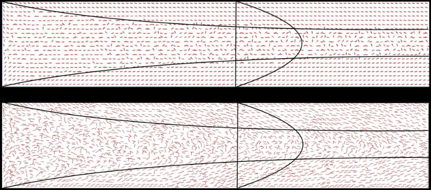
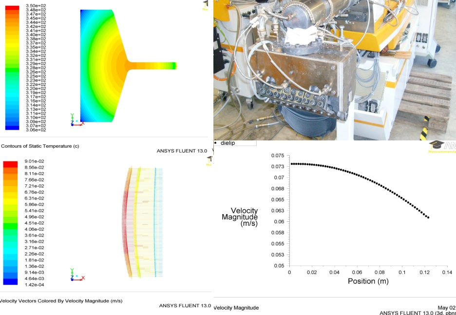
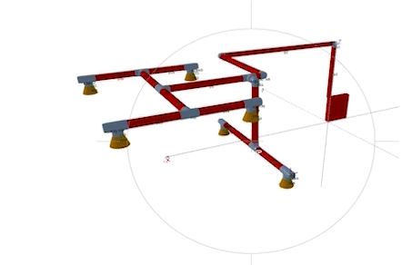
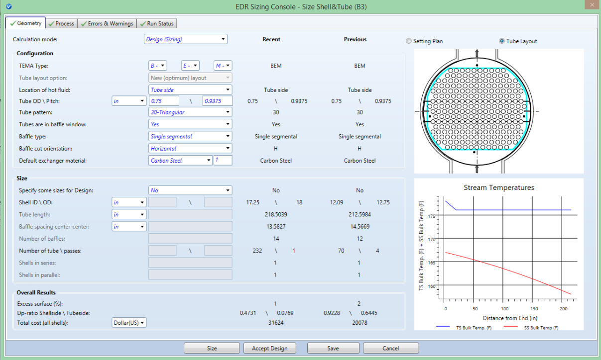
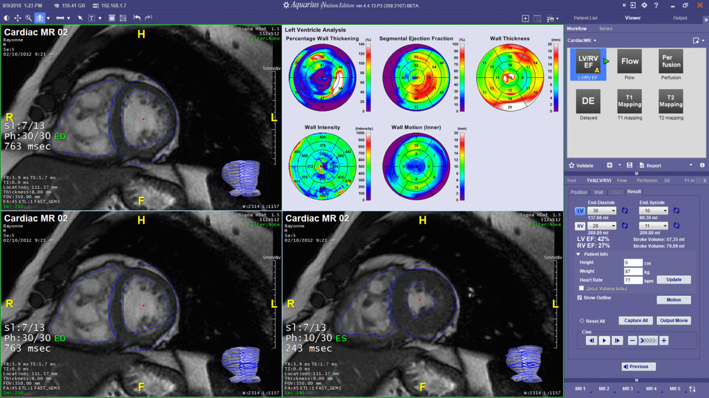

Arash Agan
About Me
Background in Mechanical Engineering with a focus on Thermal fluids
Applied computational fluid dynamics to aerospace, fire protection and polymer processing industries
Developed scientific software for different industries
Work History
Johnson Controls 
PhD activities
Simulation and experimental studies of liquid crystalline polymers (LCPs)
Worked under supervision of Prof. Michael Zimmerman and Prof. Anil Saigal
PhD Thesis
Development of a simulation tool to analyze the orientation of LCPs during extrusion process.

UDF code added to Ansys Fluent in CResearch assistant (PhD)
CFD modeling of extrusion processes
Johnson Controls Inc.
Worked mostly on special hazards projects
Created fire protection system design software for inert and halocarbon fire extinguishing systems
Designed, patented a silent nozzle for inert gas fire protection systems (Patent US11612773B2)
Took fire dynamics and fire modeling courses at WPI and created jupyter notebooks to automate calculations at JCI
Fire protection design software
Pipe network design software for inert gasses and halocarbons
 www.suppressiondesigncenter.comIdeal gas flow in pipe with heat transfer and friction
\[\begin{equation} \tiny \frac{d T_0}{T_w-T_0}=2 f \frac{d x}{D} \end{equation}\] \[\begin{equation} \tiny d M^2=F_{T_0} \frac{d T_0}{T_0}+F_f 4 f \frac{d x}{D}=\left(F_{T_v}+\frac{2 T_0}{T_w-T_0} F_f\right) \frac{d T_0}{T_0} \end{equation}\] Solution using ScipyFire protection design software
Fluid delivery time calculation engine for fire sprinklers
www.SprinkFDT.comData Analysis
Aspen Technology
Design software for chemical and mechanical engineers
Aspen Technology
Used FlaskRESTful and OpenAPI to create a web API for AspenEDR
Developed automated Python tests for calculation engines of AspenEDR
Terarecon Inc.
3D Visualization of MRI and CT scan data for radiologists
Terarecon Inc.
Optimized algorithms and SQL query performance of server side code
Implemented dockerized cloud functionality in Linux environment